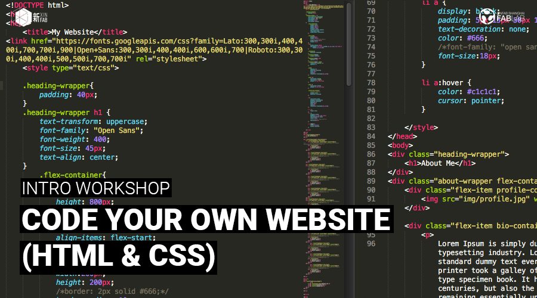
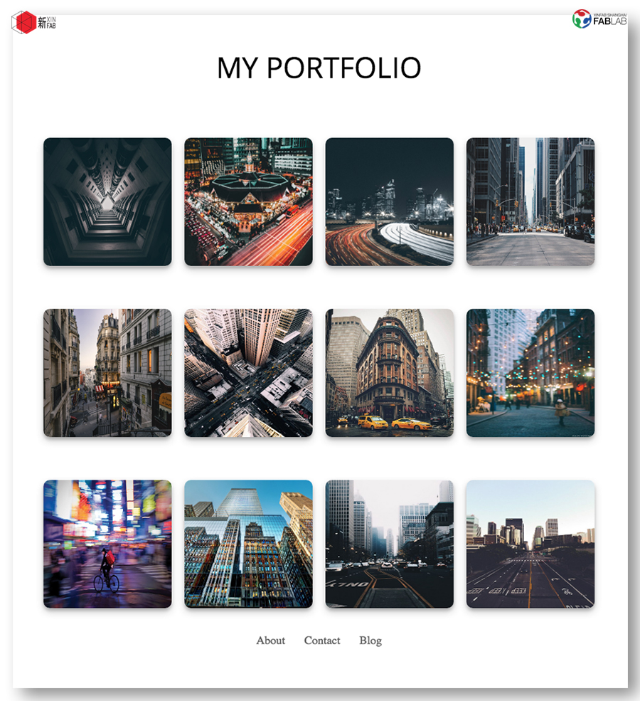
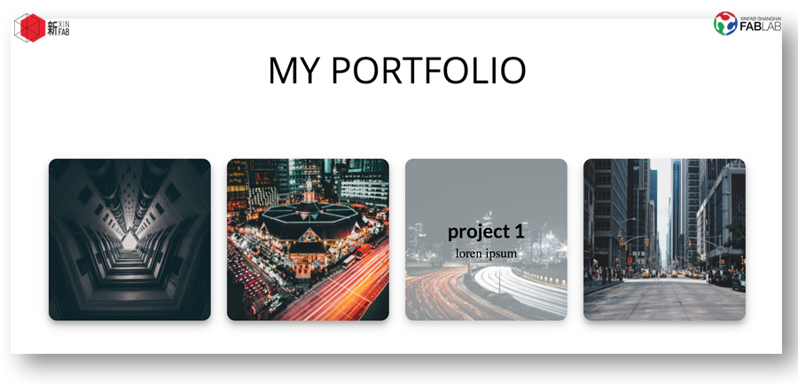

WORKSHOP
CODE YOUR OWN WEBSITE (INTRO TO HTML AND CSS)

When: Saturday, March 3, from 2pm to 6pm
Where: Xinfab - Kangding East Rd, Lane 45, Building no.5, Room 102, Jing'an District
Price: Special inauguration price 200 RMB (Wechat 210 RMB)
In today's www.world, someone who doesn't have a website is basically a nobody. Big or small businesses, freelancers, job seekers, or anyone who wants a place under the sun needs to be "googleable" (or "baiduable") these days. Even the shifu next door has his own website! So we think if shifus can do it, so can you.
Katie is going to share with you her coding skills during this intro workshop. You will learn about the fundamentals of HTML and CSS and code a basic portfolio landing page that looks like the photos below (there is of course room for customization!). We will spend most of the workshop live coding.
You will walk away not only with a basic framework of a portfolio site, but also basic coding skills that will come in handy even if you decide to go for a ready-made template (like wordpress, wix, etc).
No previous coding knowledge is needed, but you do need to be familiar with how to use a computer (in other words, Windows or iOS don't scare you and you understand basic commands like Ctrl C+Ctrl V).
Things you should bring:
// Your laptop and charger
// Mouse (this workshop can’t be followed without a mouse)
// Install Sublime Text (free software) in your laptop before you come (https://www.sublimetext.com/3)
// Install Google Chrome in your laptop before you come
// Your passion, curiosity, and questions


WORKSHOP SCHEDULE
// PART 1 - GETTING FAMILIAR WITH WEB CODING
_Intro to basic concepts
_HTML: Elements, attributes, layout
_CSS: Syntax, properties, new properties in CSS3
// PART 2 - LIVE CODING
_Build the basic portfolio together with Katie
_Live debug with Google chrome developer tool
_Troubleshooting
_Going forward: Resources and links
///////////////////////////////////
HOW TO SIGN UP
SIGN UP DEADLINE: MARCH 2
// ALIPAY (200 RMB)
transfer the workshop fee to pay@xinfab.com (please indicate your phone number on the payment details so we can contact you!)
// WECHAT (210 RMB - Wechat charges us a fee)
Enter our shop with your phone via this link and proceed to payment with Wechat Wallet
// CASH (200 RMB)
Come by our lab during our opening hours to book your spot. (You can also just come when the workshop starts, but we cannot guarantee there will be a spot left for you.)
Questions? Send an email to info@xinfab.com.
///////////////////////////////////
ABOUT THE TEACHER

Katie Chen is a Chinese Interactive Media Arts major with a focus on combining coding and design at New York University Shanghai. Katie has been coding intensively for about a year and half now and she can write in HTML, CSS and processing (p5 js) as well - a graphic programming language that's gotten popular over the past couple of years. Among the many things she has done, she has developed a drumming game (graphics in processing, Arduino and sensors for the physical reactions). Katie can create really cool animations just by typing commands. Aside from being a part of her formal education, coding is one of Katie's favorite hobbies.
时间：3月3日星期六从下午2：00到6：00
地点： 新Fab- 静安区康定东路45弄5号102室
价格： 200元（微信210元）
在今天的www.world，一个没有网站的人基本上不存在。 任何企业，自由职业者，求职者，或任何想在阳光下的人最近都应该是“百度可搜索的”。 即使隔壁师父有他自己的网站！ 所以我们认为如果他们能做到这一点，那么你也是如此。
Katie将在这个介绍车间期间与你分享她的编码技巧。 你将学习HTML和CSS的基础知识，并编写一个类似于上面的照片组合站点（当然还有自定义空间！）。 我们将用大部分的时间实时编码。
加入Katie和Pamela在车间，你将学习如何创建和设计自己的GIF。除了制作gif之外，你将会学到什么是动画技术，你可以稍后再进一步制作视频。我们将教你如何制作简单的动画（GIF）作为两种不同技术的介绍：动画矢量（艺术作品或文字）和定格动画（照片）。你会按照一系列的GIF作为风格和建设的参考。
你不仅可以脱离基本框架组合网站，而且可以使用基本的编码技巧，即使您决定使用现成的模板（如wordpress，wix等）也能派上用场。
要求：没有必要的编程知识是必要的，但是你需要熟悉如何使用计算机（换句话说，Windows或iOS不会吓到你，并且你了解Ctrl C + Ctrl V等基本命令）。
你应该带的东西：
// 笔记本和充电器
// 鼠标（推荐）
// 你来之前在你的笔记本电脑上安装Sublime Text (免费）。 （这里免费下载：https://www.sublimetext.com/3)
// 你来之前在你的笔记本电脑上安装Google Chrome
// 你的激情，好奇心和问题
///////////////////////////////////
如何注册
注册截止日期：3月2日（星期五）
// 支付宝（200 RMB）
将研讨会费用转至 pay@xinfab.com（请在付款明细上注明您的电话号码，以便我们与您联系！）
// 现金（200 RMB)
由我们的实验室在我们的开放时间来预订你的位置。
// 微信（210 RMB - 微信收费）
有问题吗？ 发邮件到info@xinfab.com.
///////////////////////////////////
关于教师们
Katie Chen是中国互动媒体艺术专业，专注于纽约大学上海编码与设计相结合。 凯蒂一直致力于大约一年半的编码工作，她还可以编写HTML，CSS和处理（p5 js） - 一种在过去几年中流行的图形编程语言。 在她所做的很多事情中，她开发了一个打鼓游戏（加工图形，Arduino和物理反应传感器）。 凯蒂可以通过输入命令创建非常酷的动画。 除了成为正规教育的一部分之外，编码和动画是凯蒂最喜欢的爱好。